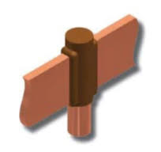

Rodhini Safety Pvt. Ltd. customercare@rodhini.com
Mobile: 9495009933
The greatest electrical safety of a building or structure is in low-resistance earthing. Without it a lightning arrester is not only not effective but also dangerous. With it, electronic equipments inside the building can be completely protected by installing also surge protective devices.
Electrical Earthing is the means by which an abnormal discharge of electrical energy is routed to earth. It is done with a conducting connection to an electrode system buried in the earth. The efficiency of the discharge is higher the lower the impedance of the earthing system comprising the connection and the system in the ground. Hence the need for low-resistance earthing.
Earthing serves two purposes: Safety and function. The former relates to the safe discharge of short circuit currents and other fault currents thereby preventing shocks and equipment damage. The latter relates to the earthing being necessary for the functioning of a system; for example surge protection devices need low-resistance earthing for long life.
IEC 62305 recommends a value below 10 ohms, measured at low frequency. This is not enforced by the national codes. The general practice for homes is that if the resistance of the earthing is found to be over 25 ohms, then additional earthing is placed to reduce the value to below 25 ohms.
Low-resistance earthing is one of important factors in the safety of a building and its equipments and occupants.Three things prevent buildings, especially homes, in Kerala from having proper earthing.
Rodhini Safety Pvt. Ltd. was founded partly to solve this problem of high electrical resistance of buildings in India. The company specializes in low-resistance earthing that lasts over 25 years and which is then tested and revised.